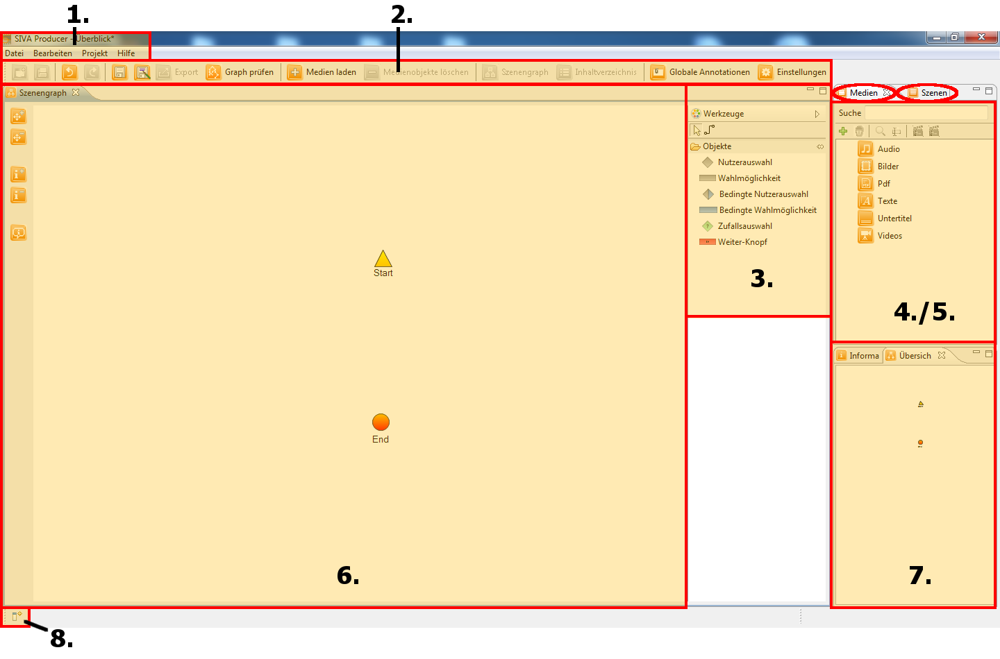

User interface
The user interface of the SIVA producer consists of a menu bar, several views and editors, which have different tasks and offer
different editing options.
In the menu bar some items that cannot be used in the mode that the programme
is used at that moment, are fade out.
Views serve for displaying items and information about these items.
With the editors you can edit different items. Editors and views can be
placed freely. Therefore you move the tab there where you want it to be placed by keeping the mouse button pressed. The arrow that
appears shows where the editor/ view should be put.

- Menu bar: In the menu bar you find options for saving or editing your
project and you can modify the settings of the project. All of the setting that do not dispose of a button there can be found
in the drop down menu in the topmost bar.
- Taskbar: Some of the options of the menu bar can be found faster by searching in the taskbar. One of them is the
GraphValidator, the Content-options, Global Annotations and the
settings for your project.
- Toolbar: Here you find the tools and elements
needed for creating a scenegraph.
- Media-Repository: All the imported media can be found here.
- Scene-Repository: Here all the video scenes you have created will appear.
- Szenegraph: The scenegraph is your main
workstation. Here the scenes and the menu items and options will be put in order and linked. By using the navigation items on
the left side you can enlarge or minimize your workspace.
- Overview: This overview shows the scengraph in a smaller version. It makes orientation easier when you have a really
big project with lots of scenes.
- Administration: If you want to change the order of the items of the editor and want to add further items you can do
that here. Also if you have closed a window and want to open it again, you can get it back here.